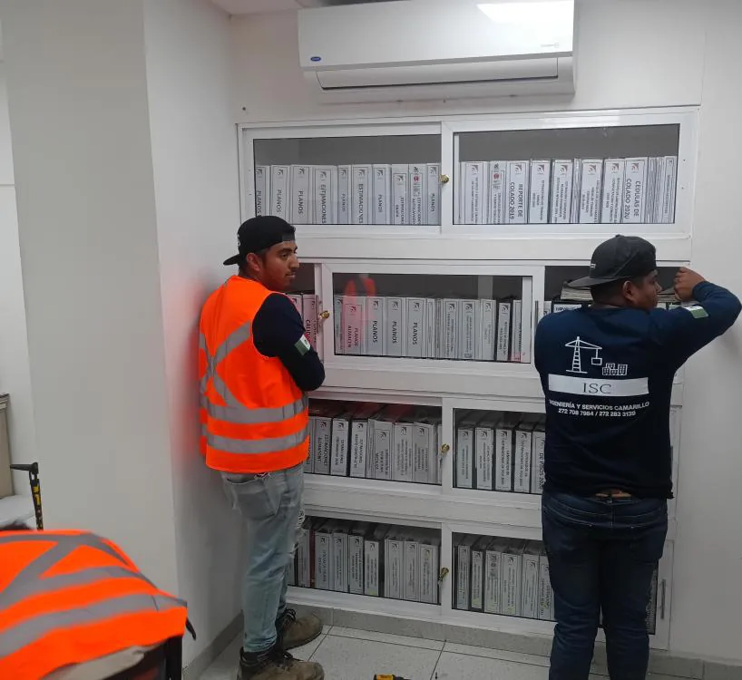

Montosa / PROYECTO 09Adecuación de
ISC / INGENIERÍA Y SERVICIOS CAMARILLOAdecuación de
instalaciones de archivo
Instalación de puertas corredizas de aluminio blanco en el área de archivo.
FICHA DE PROYECTOTrabajo
Trabajo
documentado.
CLIENTEMontosa
UBICACIÓN / REFERENCIAÁrea de archivo
ESPECIALIDADAdecuaciones
ALCANCE
Instalación de puertas corredizas de aluminio blanco en el área de archivo.
EVIDENCIA FOTOGRÁFICA
Una mirada al proceso.
Imágenes originales incluidas en el currículum empresarial de ISC.